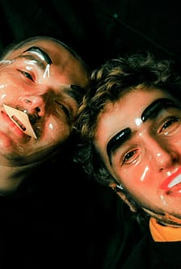
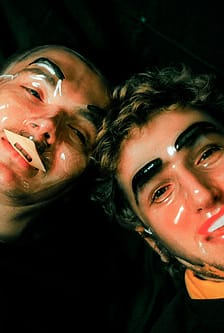
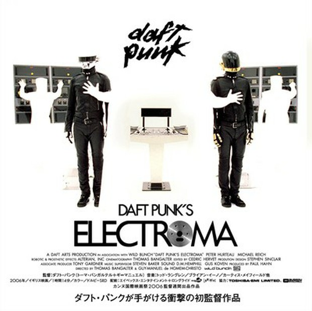
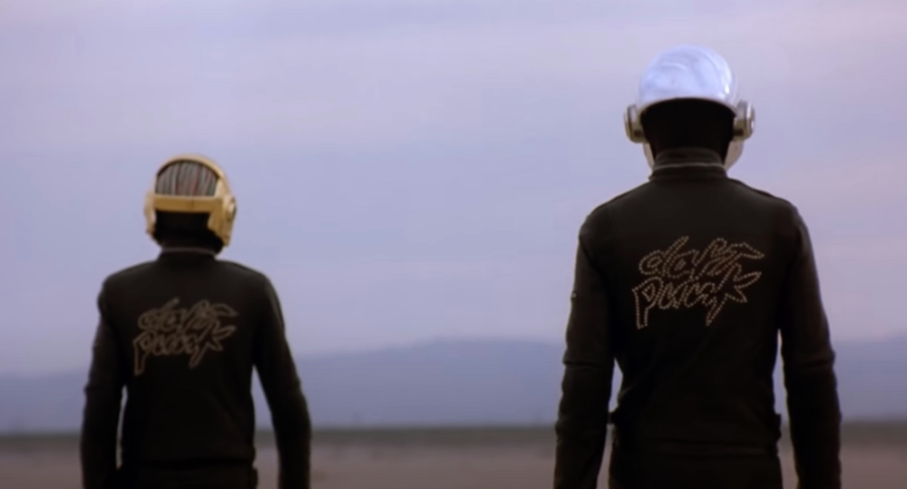

1993 — Formation du groupe
Thomas Bangalter et Guy-Manuel de Homem-Christo forment Daft Punk à Paris après leur groupe rock Darlin’. Naissance d’un duo emblématique de la French Touch.
Thomas Bangalter et Guy-Manuel de Homem-Christo forment Daft Punk à Paris après leur groupe rock Darlin’. Naissance d’un duo emblématique de la French Touch.
Premier album. Un son brut, house et techno, avec les classiques Da Funk et Around the World.

Thomas et Guy-Manuel adoptent leurs célèbres casques de robots. Naissance de leur identité visuelle futuriste.

Virage vers la pop électronique et les sons rétro-futuristes. Contient One More Time et Harder Better Faster Stronger.

Film d’animation japonais réalisé avec Leiji Matsumoto. Il illustre l’album Discovery dans un univers galactique vibrant.
Premier album live, enregistré à Birmingham. Le son brut des débuts capturé sur scène.

Album plus sombre et industriel, avec Robot Rock et Technologic.

Premier long-métrage du duo français, drame expérimental franco-américain écrit et réalisé par les Daft Punk.
Leur tournée mythique à travers le monde. L’album live remporte un Grammy Award.

BO du film de Disney. Mélange orchestral et électro, acclamé pour son atmosphère cinématographique.
.jpg)
Un hommage à la musique des années 70-80, avec des collaborations comme Pharrell Williams et Nile Rodgers.

Le duo annonce sa fin dans une vidéo intitulée Epilogue, marquant la fin d’une ère.
